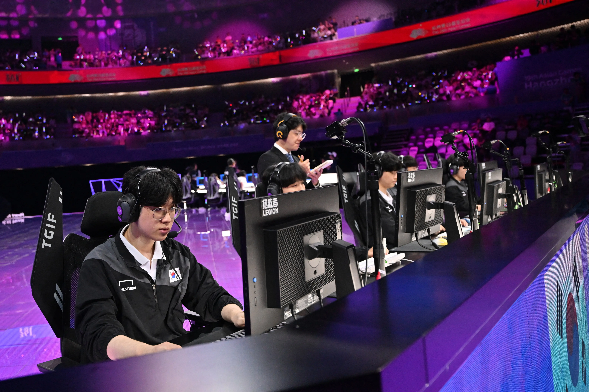

Os esportes na Coreia do Sul fazem parte da cultura do país e são praticados tanto de forma tradicional quanto moderna.
O esporte nacional é o taekwondo, uma arte marcial criada na Coreia que combina técnicas de defesa e ataque com chutes e golpes rápidos.
Atualmente, o taekwondo é praticado em diversos países e faz parte dos Jogos Olímpicos.
Além do taekwondo, o beisebol é um dos esportes mais populares entre os sul-coreanos, atraindo grandes públicos aos estádios e sendo amplamente acompanhado pela televisão.
O futebol também possui muitos fãs, especialmente após o destaque da seleção sul-coreana em competições internacionais, como a Copa do Mundo.
Outros esportes bastante praticados são o basquete, o vôlei, o golfe e os esportes eletrônicos (eSports).
A Coreia do Sul é considerada uma das maiores potências mundiais em eSports, com competições profissionais de jogos eletrônicos que atraem milhões de espectadores.
Dessa forma, a Coreia do Sul se destaca por valorizar tanto seus esportes tradicionais, como o taekwondo, quanto modalidades modernas e populares em todo o mundo.
